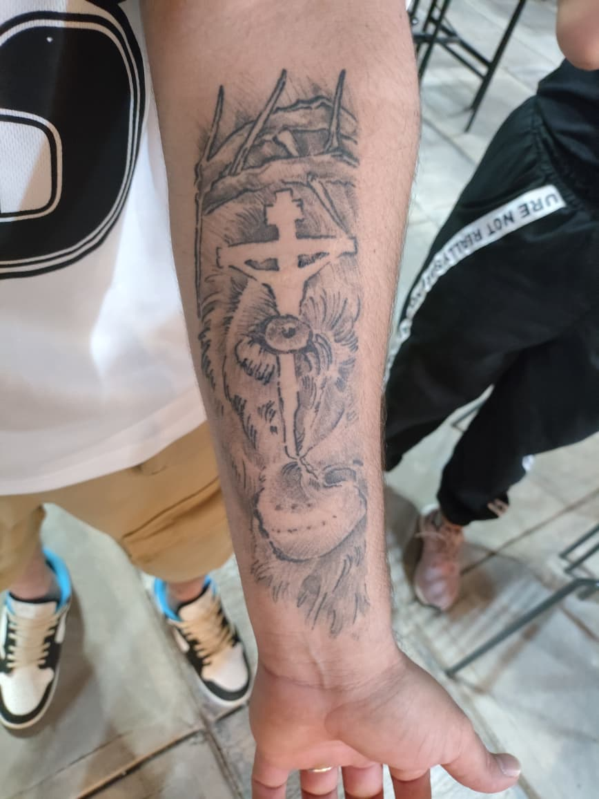
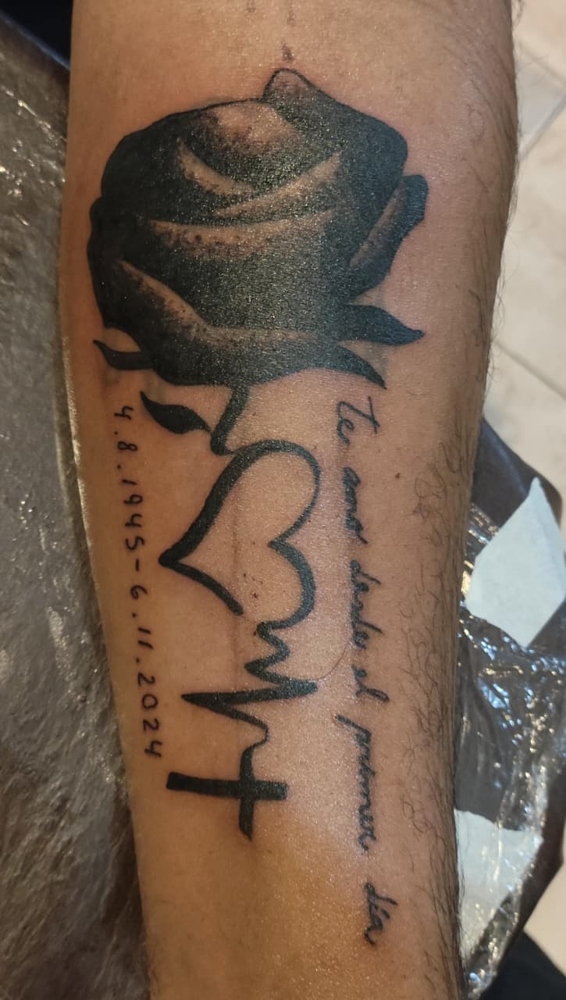
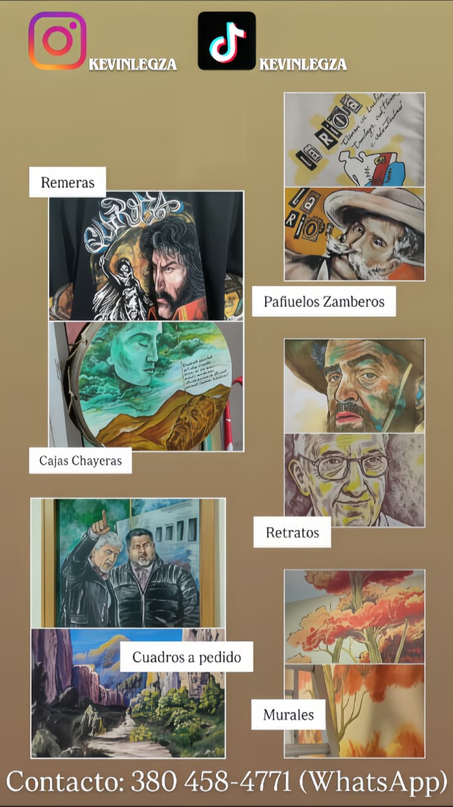
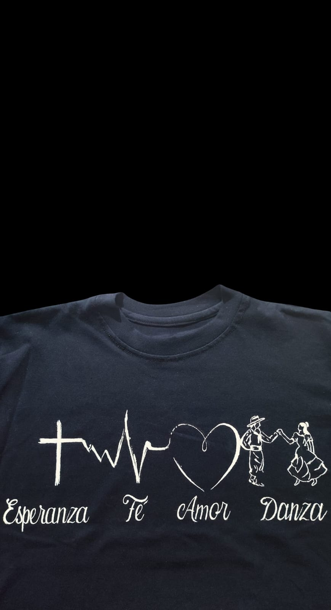

Desde Tres Lagos, Santa Cruz. Tatuajes de autor, remeras estampadas, murales y piezas únicas para llevar contigo.
Ubicado en el imponente paisaje de Tres Lagos, mi estudio es un refugio creativo. Me especializo en tatuajes con un profundo nivel de detalle y significado. Pero mi lienzo no es solo la piel: también creo pañuelos zamberos, cajas chayeras, retratos y remeras personalizadas.
Mi objetivo es transformar tus ideas, recuerdos y pasiones en una obra de arte exclusiva que te acompañe siempre.




Ya sea que pases por la Ruta 40 y quieras un tatuaje de recuerdo, o busques una obra de arte por encargo, estoy a un mensaje de distancia.